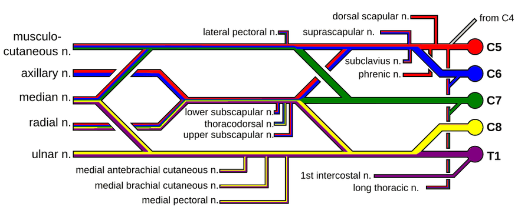

분만마비 (Brachial Plexus Birth Palsy)

신경근 색은 C5 빨강, C6 파랑, C7 초록, C8 노랑, T1 보라이다. 신경 이름은 영어 약식이어서 한국어 대응은 확인이 필요하다.
| # | 원문 | 한국어 | 설명 |
|---|---|---|---|
| 1 | C5, C6, C7, C8, T1 | 척수신경 C5~T1(뿌리) | |
| 2 | musculocutaneous n. | 근육피부신경(근피신경) | |
| 3 | axillary n. | 겨드랑신경 | |
| 4 | median n. | 정중신경 | |
| 5 | radial n. | 노신경(요골신경) | |
| 6 | ulnar n. | 자신경(척골신경) | |
| 7 | dorsal scapular n. | 등쪽어깨신경 | |
| 8 | lateral pectoral n. | 가쪽가슴근신경 | |
| 9 | suprascapular n. | 어깨위신경 | |
| 10 | subclavius n. | 빗장밑근신경 | |
| 11 | phrenic n. | 가로막신경(횡격신경) | |
| 12 | lower subscapular n. / thoracodorsal n. / upper subscapular n. | 아래어깨밑신경 / 가슴등신경 / 위어깨밑신경 | |
| 13 | medial antebrachial cutaneous n. / medial brachial cutaneous n. / medial pectoral n. | 안쪽아래팔피부신경 / 안쪽위팔피부신경 / 안쪽가슴근신경 | |
| 14 | 1st intercostal n. / long thoracic n. | 첫째갈비사이신경 / 긴가슴신경 | |
| 15 | from C4 | C4에서 오는 가지 |
쉽게 풀면
아기가 태어나는 과정에서 어깨가 산도에 걸리는 등의 이유로 팔로 가는 신경 다발이 늘어나거나 다치면서, 한쪽 팔을 잘 움직이지 못하는 상태로 태어나는 경우가 있다. 대부분 시간이 지나며 신경이 회복되지만, 손상 정도에 따라 관절가동범위 운동과 감각 자극 치료가 필요하다.
출산 과정에서 아기의 목과 어깨 사이 신경다발이 과도하게 늘어나거나 눌려 팔에 힘이 들어가지 않거나 움직임이 제한되는 상태를 말하며, 상부 신경근(C5-C6) 손상인 에르브 마비가 가장 흔한 유형이다.
왜 중요한가
분만 과정의 견인 손상으로 발생하는 대표적인 소아 말초신경질환이다. 손상 부위와 정도에 따라 자연 회복 가능성과 수술적 치료 필요성이 크게 갈리므로, 조기 신경학적 평가와 관절가동범위 유지 재활이 소아재활에서 중요하게 다뤄진다.
어떤 상태인가
- 분만 중 어깨와 목 사이의 신경 다발인 상완신경총이 늘어나거나 손상되어 신생아의 한쪽 팔에 마비가 생기는 상태이다. 어깨 난산과 큰 출생 체중이 위험 요인으로 거론된다(ACOG, 2014).
- 미국 자료에서 출생 1,000명당 1~2명 정도로 보고된다(Foad 외, 2008). 손상 범위에 따라 상부형(C5–C6, 어깨와 팔꿈치 약화; Erb 마비), 하부형 등으로 나눈다.
- Narakas 분류는 침범 범위에 따라 4군으로 나눈다. I군은 C5–6, II군은 C5–7, III군은 C5–T1(Horner 징후 없음), IV군은 C5–T1에 Horner 징후가 동반된 경우이다.
상부형(Erb 마비)에서는 C5 신경근이 가장 흔히 침범되며, 분만 때 어깨가 걸리는 어깨 난산이 가장 흔한 원인으로 꼽힌다. 팔이 몸 옆에 늘어지고 안쪽으로 돌아가 팔꿈치가 펴지고 아래팔이 엎침된 자세가 전형적이다.
진단과 평가
- 생후 초기에는 어깨 올리기, 팔꿈치 굽히기 등 능동 움직임을 관찰해 기록한다. 능동 움직임 척도(Curtis 외, 2002)가 영아에서 쓰이는 평가 도구이다.
- 많은 영아가 자연 회복하지만 비율은 연구마다 편차가 크다(Pondaag 외, 2004). 생후 수개월 동안의 회복 경과(특히 팔꿈치 굽히기)를 추적하며, 회복이 불충분하면 근전도 등으로 신경 상태를 평가하고 수술 여부를 논의한다.
- Horner 징후가 있는 광범위 손상은 예후가 불량한 것으로 서술된다.
연구에서 다루는 방식
- 손상 범위(Narakas 군), 발병 후 평가 시점, 평가 도구, 수술 여부를 적는다.
- 자연 경과가 중요한 질환이므로 중재 연구는 대조군 또는 자연 회복 기준과의 비교를 제시해야 한다.
- 결과는 어깨·팔꿈치 기능, 근력, 변형(어깨 관절 변형 등), 부모 보고 지표로 구분한다.
논문에서는 이렇게 쓰입니다
실제 논문에서
이 용어를 직접 쓴 국내 논문 문장은 아직 모으지 못했다. 모이는 대로 출처와 함께 싣는다.
예시 문장
아래 예문은 용어의 쓰임을 보이려고 만든 것으로, 실제 논문 문장이 아니다.
신경 손상으로 팔을 잘 움직이지 못하는 아기가 관절이 굳지 않도록 아주 이른 시기부터 부드럽게 팔을 움직여주는 운동을 시작했다는 뜻이다.
손상 초기의 예방적 재활 개입이 이차적 합병증인 관절 구축을 줄이는 데 중요함을 보여준다.
조금 더 깊게 보면
가벼운 신경마비부터 신경이 완전히 끊어진 경우까지 손상 정도의 스펙트럼이 넓어 초기 몇 주간의 경과 관찰이 이후 접근 방향을 정하는 데 중요한 정보로 활용된다. 상완신경총의 상부(C5-C6)가 손상된 경우와 전체가 손상된 경우는 회복 양상이 크게 다르며, 수술 여부를 결정하기 위해 생후 3~6개월경 근전도 등으로 신경 회복 정도를 추적 관찰한다.
주의할 점
신경 회복 속도가 더디거나 특정 근육의 마비가 지속되면 이차적으로 어깨 관절이 탈구되거나 구축될 위험이 있어 정기적인 신경학적 재평가가 필요하다. 팔을 전혀 움직이지 못한다고 방치하면 어깨 관절이 굳어 이후 신경이 회복되어도 움직임을 되찾기 어려워지므로, 손상 초기부터 수동 관절가동범위 운동을 병행해야 한다.
회복 속도가 더디다고 조급하게 수술을 서두르기보다, 정해진 관찰 기간 동안의 신경학적 변화 추이를 근거로 신중하게 수술 시점을 결정해야 한다.
참고 문헌
- American College of Obstetricians and Gynecologists. (2014). Neonatal brachial plexus palsy: Report of the American College of Obstetricians and Gynecologists' Task Force on Neonatal Brachial Plexus Palsy. ACOG.
- Foad, S. L., Mehlman, C. T., & Ying, J. (2008). The epidemiology of neonatal brachial plexus palsy in the United States. Journal of Bone and Joint Surgery (American Volume), 90(6), 1258–1264.
- Pondaag, W., Malessy, M. J. A., van Dijk, J. G., & Thomeer, R. T. W. M. (2004). Natural history of obstetric brachial plexus palsy: A systematic review. Developmental Medicine & Child Neurology, 46(2), 138–144.
- Curtis, C., Stephens, D., Clarke, H. M., & Andrews, D. (2002). The active movement scale: An evaluative tool for infants with obstetrical brachial plexus palsy. Journal of Hand Surgery (American Volume), 27(3), 470–478.
- Wikipedia contributors. (n.d.). Erb's palsy. Wikipedia.
표의 기준값은 위 문헌에 따른 관례이고, 분야·학술지마다 기준이 다를 수 있다.